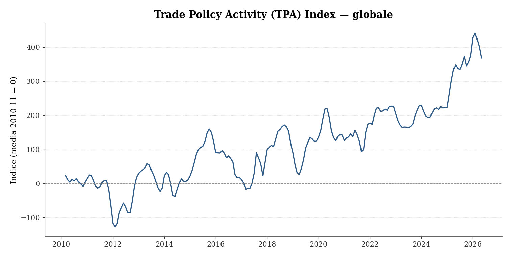
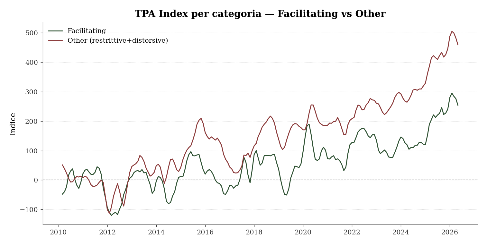
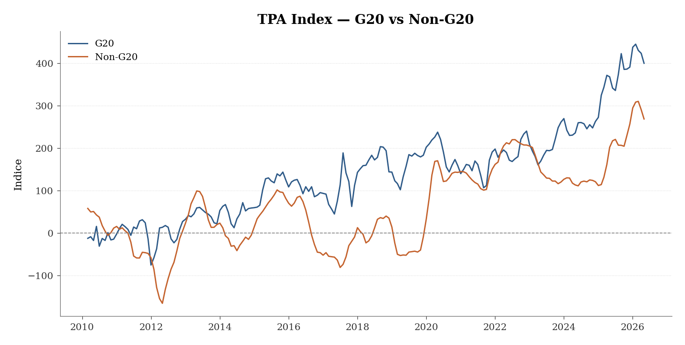

L’attività di politica commerciale globale
Il Trade Policy Activity Index del Fondo Monetario Internazionale e dell’Organizzazione Mondiale del Commercio
Paolo Volterra ![]()
Un nuovo indicatore mensile, sviluppato congiuntamente da economisti del Fondo Monetario Internazionale e dell’Organizzazione Mondiale del Commercio, misura l’intensità dell’attività di politica commerciale a livello globale dal 2010 a oggi. L’indice sintetizza in un unico fattore le informazioni contenute in due basi dati indipendenti sulle misure di politica commerciale adottate dai governi, distinguendo tra misure che facilitano gli scambi e misure che li restringono o li distorcono. Nell’ultimo anno l’indice ha raggiunto il livello più alto dall’inizio della serie, con le misure restrittive che hanno superato nettamente quelle facilitanti.
politica commerciale, dazi, WTO, FMI, frammentazione geoeconomica, modelli a fattori dinamici
1 Introduzione
Negli ultimi anni i governi hanno fatto ricorso a un numero crescente di strumenti di politica commerciale — dazi, misure non tariffarie, sussidi — spesso in combinazione tra loro e con effetti opposti, restringendo alcuni flussi mentre ne facilitano altri. Gli indicatori esistenti colgono aspetti parziali di questa attività: alcuni misurano il livello di restrittività commerciale in un dato momento, altri catturano l’incertezza percepita attraverso l’analisi della copertura mediatica, altri ancora si concentrano sulla frammentazione geopolitica nel suo complesso. Nessuno di questi offre una misura sintetica, a frequenza mensile, dei cambiamenti effettivi di politica commerciale su scala globale.
Il Trade Policy Activity Index (TPA Index), sviluppato da un gruppo di economisti del Fondo Monetario Internazionale e dell’Organizzazione Mondiale del Commercio, colma questa lacuna [1]. L’indice copre 197 economie dal gennaio 2010 e viene aggiornato periodicamente dalle due istituzioni [2].
2 Fonti dei dati e costruzione dell’indice
L’indice si basa su due archivi indipendenti, entrambi nati dopo la crisi finanziaria globale per monitorare le misure di politica commerciale adottate dai governi.
Il primo è il Trade Monitoring Database dell’Organizzazione Mondiale del Commercio, che registra le misure implementate dai membri e dagli osservatori dell’organizzazione sulla base di comunicazioni ufficiali dei governi e di fonti pubbliche verificate dal segretariato [3]. Il secondo è il Global Trade Alert, sviluppato dall’Università di San Gallo, che copre un insieme più ampio di misure, inclusi i sussidi e le misure adottate da enti substatali, attingendo anche a fonti non ufficiali come la stampa [4].
Le due basi dati differiscono per ampiezza di copertura e tempestività di aggiornamento, ma proprio per questo si completano a vicenda. Gli autori calcolano, per ciascuna fonte e categoria di misura, il numero mensile di nuovi provvedimenti introdotti a livello globale e il numero medio di prodotti coinvolti, classificando ogni misura come facilitante (quando riduce la restrittività degli scambi o interviene a favore del commercio, incluse le revoche di restrizioni precedenti) oppure come restrittiva o comunque distorsiva (quando introduce o inasprisce un ostacolo al commercio, inclusi i sussidi).
Da questo insieme di serie mensili gli autori estraggono, tramite un modello a fattori dinamici, una componente comune che rappresenta l’attività di politica commerciale a livello globale, distinguendo un andamento di lungo periodo da oscillazioni cicliche di più breve durata. Il modello consente inoltre di separare la dinamica delle misure facilitanti da quella delle misure restrittive, e di scomporre l’indice per gruppi di economie, in particolare tra paesi del G20 e paesi non appartenenti al G20.
3 L’andamento dell’indice dal 2010

Trade Policy Activity Index, gennaio 2010 – maggio 2026. L'indice è normalizzato a media zero nel periodo gennaio 2010 – dicembre 2011.
L’indice presenta un andamento crescente che si accentua a partire dal 2020, con alcuni picchi ben identificabili. I primi due, nel 2013 e nel 2016, sono meno noti al pubblico: il primo coincide con la conclusione dell’Accordo sulla Facilitazione degli Scambi dell’Organizzazione Mondiale del Commercio, che ha innescato un’ondata di riforme doganali; il secondo riflette la combinazione tra la svalutazione dello yuan cinese del 2015, un aumento delle inchieste su misure di difesa commerciale e l’incertezza legata al referendum sulla Brexit.
I picchi successivi sono più familiari: l’inasprimento dei dazi tra Stati Uniti e Cina nel biennio 2018-2019, le misure commerciali adottate durante la pandemia da COVID-19 nel 2020, le restrizioni seguite all’invasione russa dell’Ucraina nel 2022 e, infine, il picco più elevato dell’intera serie, registrato nel 2025-2026 in corrispondenza di un nuovo aumento delle tensioni commerciali tra le maggiori economie.
Nell’ultimo anno di rilevazione disponibile l’indice si è attestato in media su un livello di circa 378, contro un valore prossimo allo zero nel biennio di riferimento 2010-2011: un livello mai raggiunto prima nella serie storica. Il coefficiente di persistenza stimato dagli autori indica che circa il 60 per cento di un rialzo dell’attività di politica commerciale in un dato mese si trasmette al mese successivo, segnalando una componente ciclica non trascurabile accanto al trend di fondo.
4 Misure facilitanti e misure restrittive

Trade Policy Activity Index scomposto per categoria di misura.
Storicamente le misure facilitanti e quelle restrittive tendono a muoversi insieme: nelle fasi di crisi i governi spesso restringono le esportazioni di beni ritenuti strategici mentre allo stesso tempo facilitano le importazioni per compensare le carenze interne, un comportamento coerente con la letteratura sulla gestione delle emergenze commerciali [1]. Questo co-movimento si osserva chiaramente durante la pandemia da COVID-19.
L’episodio del 2025-2026 costituisce un’eccezione a questo schema: le misure restrittive sono cresciute in modo molto più marcato di quelle facilitanti, determinando una divergenza tra le due componenti che non ha precedenti nella serie storica. Nella media degli ultimi dodici mesi disponibili, l’indice relativo alle misure restrittive si colloca a un livello superiore di oltre il doppio rispetto a quello delle misure facilitanti, a conferma di quanto segnalato dagli stessi autori in una nota divulgativa successiva alla pubblicazione del working paper [5].
5 Differenze tra il G20 e le altre economie

Trade Policy Activity Index per gruppo di economie: G20 e non-G20.
Scomponendo l’indice per gruppi di paesi emerge che le economie del G20 mostrano una tendenza di crescita dell’attività di politica commerciale più persistente rispetto alle economie non appartenenti al gruppo. Gli autori sottolineano tuttavia che questo andamento non è riconducibile soltanto alle poche economie che di norma dominano l’attenzione pubblica: l’aumento dell’attività di politica commerciale coinvolge un insieme più ampio di paesi, incluse economie di dimensioni minori.
6 Confronto con altri indicatori
Il Trade Policy Activity Index si affianca, senza sovrapporsi, ad altre famiglie di indicatori già utilizzate per monitorare l’ambiente commerciale internazionale. Rispetto agli indici di incertezza commerciale costruiti a partire dalla copertura mediatica, che tendono a manifestare picchi in corrispondenza di eventi ad alta visibilità pubblica, il nuovo indice cattura anche i cambiamenti di policy che non attirano l’attenzione dei media. Rispetto agli indici di frammentazione geoeconomica, costruiti su basi più ampie che includono relazioni diplomatiche e schieramenti nei consessi internazionali, il TPA Index si concentra specificamente sui cambiamenti di politica commerciale, con una frequenza di rilevazione mensile che ne consente un uso più tempestivo in analisi economiche correnti.
7 Conclusioni
Il Trade Policy Activity Index offre una misura sintetica e aggiornata con continuità dell’evoluzione della politica commerciale a livello mondiale, colmando un vuoto tra gli indicatori esistenti di restrittività commerciale, incertezza percepita e frammentazione geopolitica. I dati raccolti dal 2010 a oggi documentano un progressivo intensificarsi dell’attività di policy commerciale, con un’accelerazione a partire dal 2020 e un livello record raggiunto nel 2025-2026, in un contesto nel quale le misure restrittive hanno superato nettamente quelle facilitanti. Per la sua frequenza mensile e la sua copertura pressoché universale, l’indice si presta a essere impiegato come variabile di controllo in analisi empiriche sugli effetti di specifici shock di politica commerciale, oltre che come strumento di monitoraggio corrente delle tensioni commerciali internazionali.
Bibliografia
Trasparenza sull’uso dell’intelligenza artificiale
L’uso di strumenti di intelligenza artificiale generativa è dichiarato esplicitamente in quanto parte del processo di lavoro seguito nella redazione del presente documento. Tali strumenti sono stati impiegati a supporto della lettura, della sintesi, della riorganizzazione argomentativa e della revisione testuale, sempre nell’ambito di un processo pienamente controllato dall’autore.
La responsabilità per le fonti utilizzate, le analisi condotte, le verifiche effettuate, le interpretazioni proposte e le conclusioni formulate resta interamente in capo all’autore.
L’intelligenza artificiale è stata utilizzata come ambiente di supporto cognitivo ed editoriale, non come fonte primaria, autore autonomo o sostituto del giudizio critico.